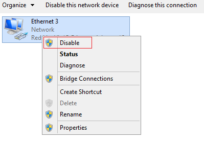
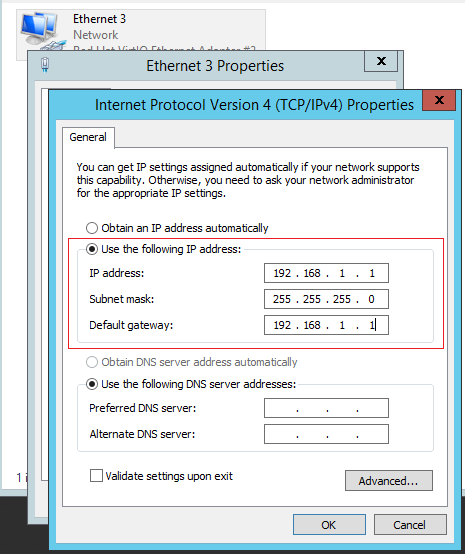

Symptom
You attempt to use DHCP to obtain a private IP address, but you cannot obtain the IP address.
- For Linux, a private IP address cannot be assigned.
- For Windows, a private IP address is changed to an IP address in the 169.254 network segment, which is different from the private IP address displayed on the ECS console.
Solution
- Check whether dhclient is running in the ECS.
- Log in to the ECS and run the following command:
ps -ef | grep dhclient
- If the process is not running, log in to the ECS, and restart the ECS NIC or initiate a DHCP request.
- Linux
Run the dhclient eth0, ifdown eth0 + ifup eth0, or dhcpcd eth0 command.
- Windows
Right-click a local area connection and choose Disable from the shortcut menu. Then, choose Enable.

- Handle the issue if the DHCP client fails to work for a long time (for example, the issue recurs after the NIC is restarted).
- Configure a static IP address.
- Windows
- Right-click Local Area Connection and choose Properties from the shortcut menu.
- In the displayed dialog box, select Internet Protocol Version 4 (TCP/IPv4), click Properties, and modify parameter settings.

- Linux
- Log in to the ECS and run the following command to modify parameter settings:
vi /etc/sysconfig/network-scripts/ifcfg-eth0
BOOTPROTO=static
IPADDR=192.168.1.100 #IP address (modified)
NETMASK=255.255.255.0 #Mask (modified)
GATEWAY=192.168.1.1 #Gateway IP address (modified)
- Restart the ECS to make the network settings take effect.
- Select an image in which DHCP runs stably.
Use the public images, which support DHCP, provided on the management console.
DHCP needs to be configured only when Network is used for network management. DHCP does not need to be configured when NetworkManager is used for network management.
- If the fault persists, obtain the messages in /var/log/messages on the affected ECS, use the MAC address of the affected NIC to filter the desired log, and check whether there is any process that prevents DHCP from obtaining an IP address.
- If the fault persists, contact customer service for technical support.